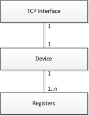
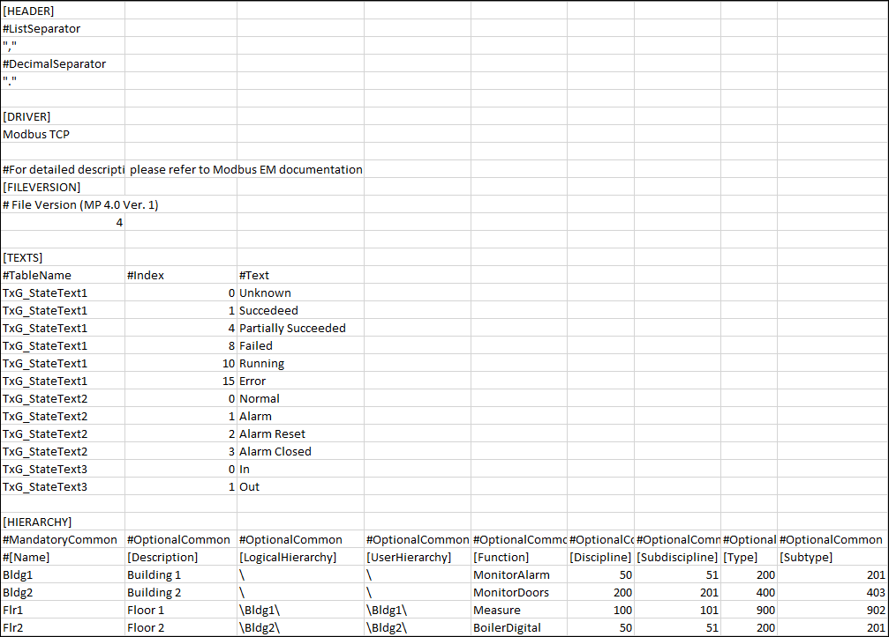
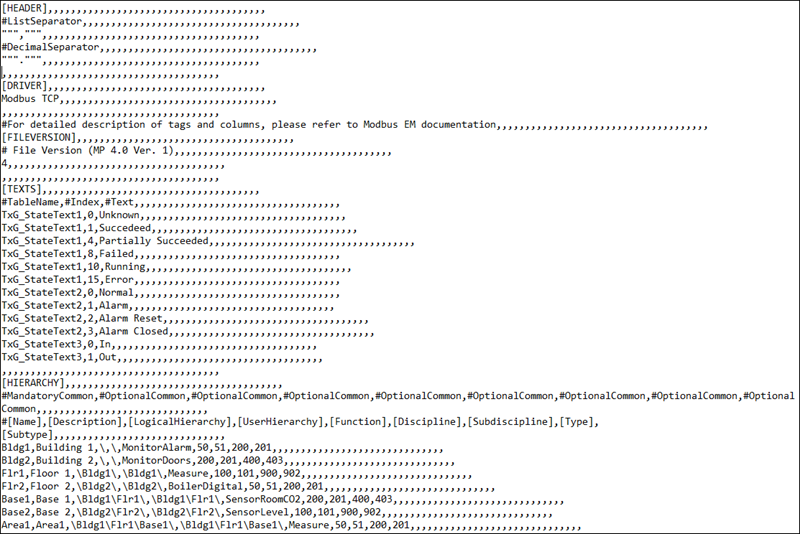

Overview of a CSV File
A CSV file contains data in which values are represented as text and separated using a separator such as comma (,).The file in the CSV format can be edited in simple text editors. The importer can parse CSV files. You can add comments to the CSV file, such as an explanation about the engineering data.
The content of the engineering data is partly dependent upon the workflow chosen. When creating object instances using standard Modbus object models, the engineering data is structured as follows.

The above relationship can be described as adevice that contains a number of data points and uses a unique TCP interface. The relationship between the communication interface and the device is one-to-one which means that each device has its own TCP interface. However, when a number of Modbus RTU devices are integrated using a TCP gateway, there is only one physical communication interface, which is used by more than one device. In this case, the engineering data still contains a unique interface declaration for each device. A communication interface is a unique combination of an IP address and a slave address. The following example illustrates how a single device and its required registers are assigned in the engineering data.


At this point, the interface, device and data points are interlinked using the same attribute.
Points to remember while editing a CSV file in Microsoft Excel
- If you use a semicolon as a column separator in the CSV file, then the decimal separator must be a period. Otherwise, the data is saved in the wrong format (for example, 1.1 becomes 01.Jan; 2.6 becomes 02.Jun).
- The decimal separator is available only in advanced options of Microsoft Excel.
- When using negative values in Microsoft Excel cells, you must use the character ’ .
- For the Resolution value, decimal numbers must be applied in the format xx.xxx; otherwise, the wrong value is interpreted by the Importer.
- The elements of the CSV file must be added in the CSV in the following order: interface, device and point. Changing the order may cause the Importer to reject the entry. The Importer interprets fields based on their order and not according to the column headers, for example, [InterfaceName], given in the CSV file. Column headers are provided only for informative purposes but do not have any significance for the importing process.
- A comment line is marked with the character #. # marks the starting of a row with headers. # denotes comments, meaning that the Importer ignores the row.
- The elements in the CSV file cannot include spaces, or a semicolon: (;).
The following special characters will be replaced with an underscore (_):
- @, - $ , - * , - - , - : , - ?, , -